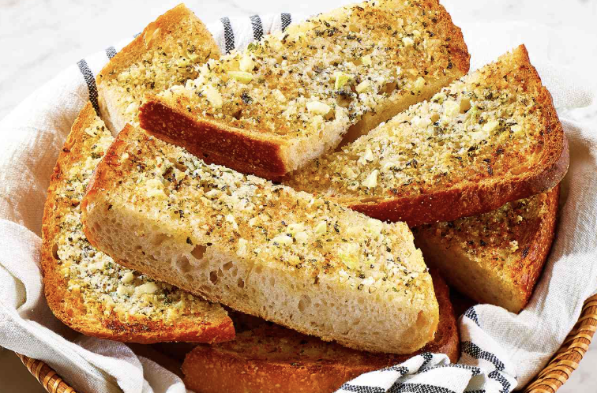

Home
Delicious Garlic Bread

Below is the best recipe for easy and delicious garlic bread.
Consider the measurements a guide, you'll want the spread to be a paste like consistency.
Why have toasted bread when you can have delicious toasted garlic bread?
This elevates any toast experience and is especially a family favorite on pasta night.
It's a crowd pleaser that'll have everyone asking for seconds. This will take under 10 minutes to make and the spread can be used for approximately 12 servings.
Ingredients
- 1 loaf of Italian bread
- ⅓ cup of room temperature butter
- ½ cup of Parmesan cheese
- 1 tablespoon of minced garlic
- 1 cup of water
Instructions
- Preheat the oven - I like to use the broiler
- Mix the butter until it's a light and fluffy consistency
- Add in the parmesan cheese, Italian seasoning, and minced garlic
- Add melted butter and hot water to dry ingredients
- Slice the bread to desired thickness
- Spread the garlic butter mixture over the slices
- Cook in the broiler for a few minutes, monitor closely to avoid burning
Optional: Can add butter to either just one or both sides, per preference
Home
Pairs well with Delicious Stuffed Shells